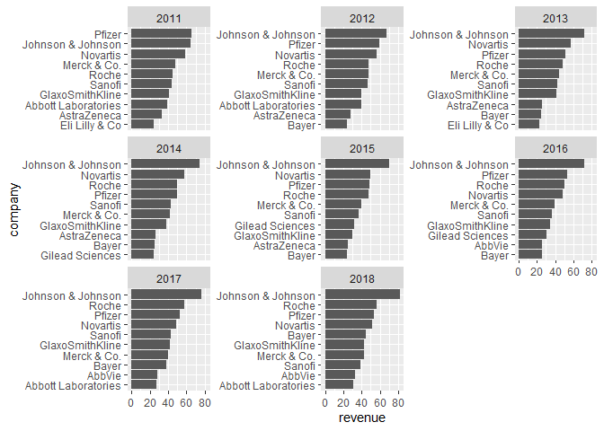

Overview
ggcharts provides a high-level ggplot2 interface for creating common charts. It’s aim is both simple and ambitious: shorten the distance from data visualization idea to actual plot. How so? By taking care of a lot of data preprocessing, nitty-gritty ggplot2 details and plot styling for the user. The resulting plots are ggplot objects and can be further customized using any ggplot2 function.
Installation
if (!"remotes" %in% installed.packages()) {
install.packages("remotes")
}
remotes::install_github("thomas-neitmann/ggcharts", upgrade = "never")Why ggcharts?
Thanks to ggplot2 you can create beautiful plots in R. However, it can often take quite a bit of effort to get from a data visualization idea to an actual plot. As an example, let’s say you want to create a faceted bar chart displaying the top 10 within each facet ordered from highest to lowest. What sounds simple is actually pretty hard to achieve. Have a look:
library(dplyr)
library(ggplot2)
library(ggcharts)
data("biomedicalrevenue")
biomedicalrevenue %>%
group_by(year) %>%
top_n(10, revenue) %>%
ungroup() %>%
mutate(company = tidytext::reorder_within(company, revenue, year)) %>%
ggplot(aes(company, revenue)) +
geom_col() +
coord_flip() +
tidytext::scale_x_reordered() +
facet_wrap(vars(year), scales = "free_y")
That’s a lot of code! And you likely never heard of some of the functions involved. With ggcharts you can create the same plot (actually an even better looking one) in a single line of code.
bar_chart(biomedicalrevenue, company, revenue, facet = year, limit = 10)
That’s the beauty of ggcharts: shortening the distance between data visualization idea and actual plot as much as possible.
Features
Currently ggcharts includes the following functions:
bar_chart()diverging_bar_chart()column_chart()lollipop_chart()diverging_lollipop_chart()dumbbell_chart()
To learn more about these, check out the package website.